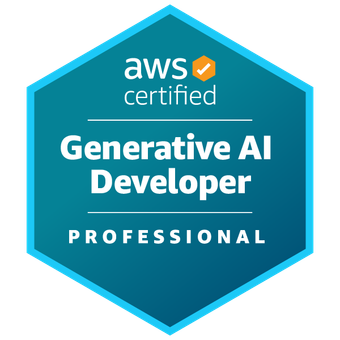

Yomio
Mobile expense tracking with OCR receipt parsing, AI-generated spending insights, chat assistance, subscriptions, authentication, analytics, and cloud infrastructure.
View projects on GitHub ↗AI engineer · backend · architecture
I am Artsiom Hontar, an AI engineer with a deep backend and architecture background. I work on distributed systems, cloud platforms, and practical agent workflows that turn messy operational problems into maintainable production systems.
01 · About
I write and build at the intersection of backend reliability, cloud economics, distributed systems, and AI-assisted engineering.
Over the last 8+ years, I have worked across enterprise engineering platforms, fintech products, Kubernetes/AWS infrastructure, and independent SaaS applications.
My work spans production architecture, legacy migration, scaling failures, observability, and the engineering decisions that keep a system understandable after the launch team has moved on.
Right now I am especially interested in how AI changes the engineering loop: not as a demo, but as a measurable system with context, tools, cost, feedback, and a human decision-maker still responsible for the outcome.
02 · Selected work
Full-stack ownership from product architecture to production deployment, plus experiments in agent engineering and orchestration.
Mobile expense tracking with OCR receipt parsing, AI-generated spending insights, chat assistance, subscriptions, authentication, analytics, and cloud infrastructure.
View projects on GitHub ↗An AI-powered Telegram mini app for astrology, compatibility, dream interpretation, and personalized daily content with custom backend services and LLM integrations.
View projects on GitHub ↗An experimental autonomous agent engine exploring planning, execution graphs, MCP tools, memory, and orchestration patterns for practical agent workflows.
View projects on GitHub ↗03 · Writing and talks
Practical material on AI engineering, architecture, context, cost, reliability, and the trade-offs behind production decisions.
Article · 2026
How to spend an AI coding budget like an engineer: model and harness choice, context, compression, caching, observability, and verified work per dollar.
Read the article →Meetup deck · 16 slides
A visual presentation on model routing, harness tax, CLI versus MCP, context engineering, caching, compression, and attribution.
Open the presentation →04 · Credentials
Selected professional certifications supporting the architecture, cloud, and AI engineering work.

AWS Generative AI DeveloperProfessional AWS Solutions ArchitectProfessional
AWS Solutions ArchitectProfessional